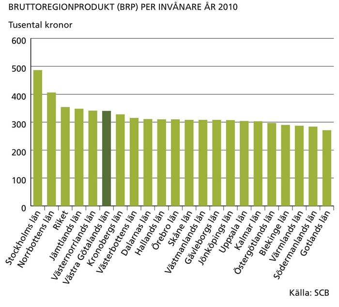
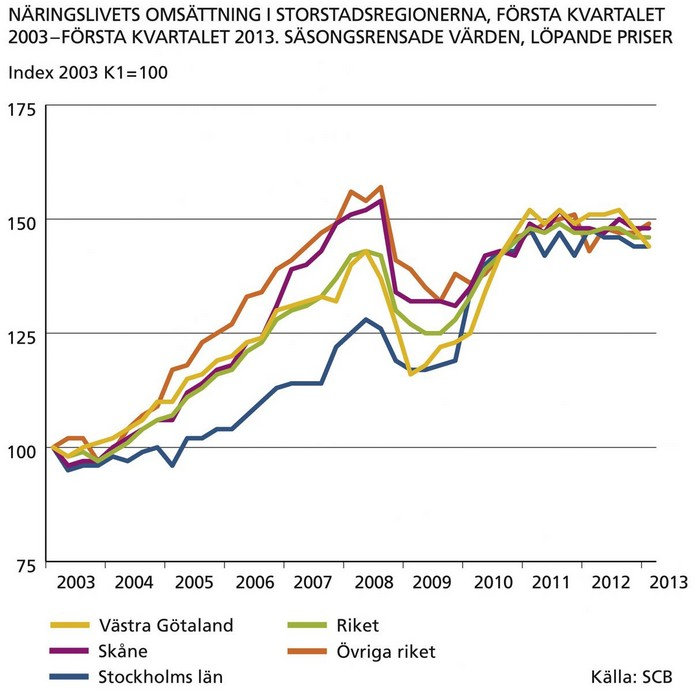
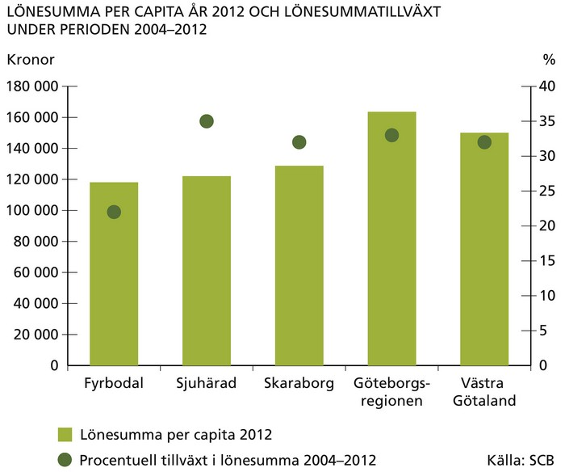
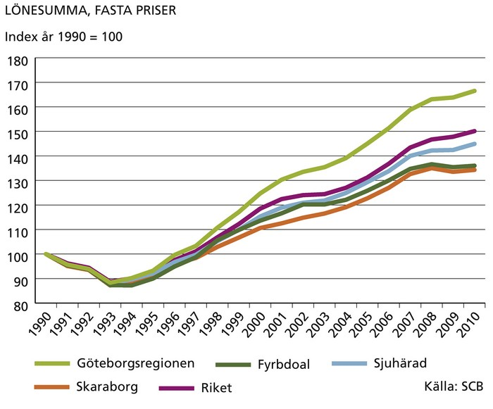
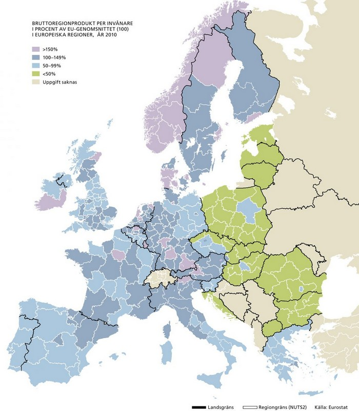

Den ekonomiska utvecklingen i en region kan mätas med bruttoregionprodukten (BRP) – det samlade värdet av alla varor och tjänster som produceras under ett år. BRP i förhållande till befolkningen i en region är ett mått på den ekonomiska välfärden. Vid en jämförelse mellan länen hamnar Stockholms län i en klass för sig med en BRP per invånare på 486 000 kronor. År 2010 hamnade Västra Götalands län på femte plats bland alla Sveriges regioner med en BRP per invånare på 340 000 kronor.
Ur ett historiskt perspektiv har Västra Götaland, i likhet med de flesta övriga regioner i Sverige, haft en hög ekonomisk tillväxt under det senaste decenniet. Men de allra senaste årens ekonomiska utveckling har påverkats starkt av konjunkturnedgången. Västra Götalands beroende av den krisdrabbade fordonsindustrin medförde ett hårdare slag mot näringslivet i Västra Götaland än i riket. Å andra sidan har återhämtningen blivit snabbare i Västra Götaland. Detta framförallt tack vare den starka uppgången i tillverkningsindustrin.

Eftersom statistik om BRP publiceras med två års eftersläpning redovisar vi här istället omsättningen i näringslivet, vilket ger en bra bild av konjunkturutvecklingen i ekonomin. Under de senaste åren har näringslivets omsättning i Västra Götaland överstigit nivån före konjunkturnedgången 2008.

För att få en bild av skillnader i ekonomisk utveckling inom Västra Götaland är lönesumma ett lämpligare mått än BRP. I Göteborgsregionen är lönesumma per invånare nästan 165 000 kronor. Detta är betydligt högre än i de tre övriga delregionerna, där lönesumman varierar mellan cirka 118 000 och 129 000 kronor per invånare. Däremot har lönesummetillväxten de senaste fem åren legat på ungefär samma nivå, något lägre i Fyrbodal.
I ett längre tidsperspektiv har Göteborgsregionen haft betydligt högre lönesummetillväxt än de tre övriga delregionerna. Under de två senaste decennierna har tillväxten i lönesumman varit svagast i Skaraborg och Fyrbodal.


I jämförelse med andra europeiska regioner har Västsverige (Västra Götaland och Halland) en stark ekonomi och hög levnadsstandard. Av kartan till höger framgår att Västsverige har betydligt högre BRP per invånare än genomsnittet för EU-regioner. Bland de närmare 300 regionerna hamnar Västsverige på 55:e plats.

This is just a landing page.
Back